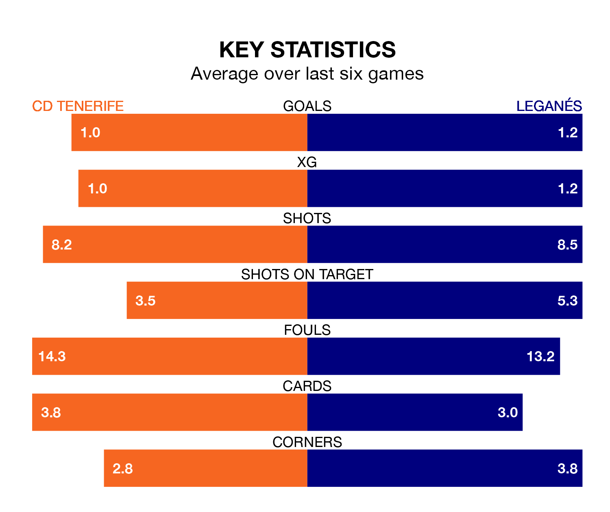

Leganés face CD Tenerife on Friday seeking to protect their long unbeaten run in the Segunda División.
Leganés are unbeaten in six, with three wins and three draws, ahead of the 7.30pm kick-off.
They face a Tenerife team who have won one and drawn two over the same number of games.
Leganés are top of the table after 35 games, of which they have won 17 and drawn 11, earning 62 points.
Tenerife are 11 places behind the visitors in 12th, with 12 wins and nine draws putting them on 45 points.
With 47 goals in 35 games so far this season, Leganés are scoring more than average in the league with 1.3 goals per game. And they are conceding fewer than average, letting in 21 goals at a rate of 0.6 per game.
The home side, meanwhile, are below average scorers, with 0.9 goals per game, compared to a league average of 1.1. They have conceded 1.0 goal per game.
With Diego Conde between the sticks, Leganés can rely on one of the league's safest pair of hands. He has kept 17 clean sheets in his 33 appearances this season, and no 'keeper has prevented the opposition scoring more often in the Segunda División.
In Tenerife's net, Juan Soriano Oropesa has 13 clean sheets in 35 games. He has conceded a goal every 95 minutes, 60% more often than the 152 minutes between goals for Conde Alcolado.
In the last 10 years, Tenerife and Leganés have played each other on 12 occasions. They won four each, and they drew four times.
On average, Tenerife scored 0.6 goals and Leganés 0.8 in those matches.
Their last meeting was on December 20, when they played out a 1-1 draw.
Tenerife's last match was on Sunday, a 1-0 loss against Albacete Balompié.
Leganés drew 0-0 with RCD Espanyol last time out, on April 12.
Updated: 11:31 (UTC), 15/04/24